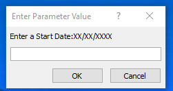
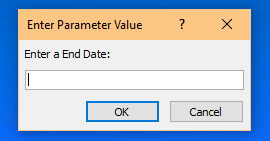

- Home
- Equation
- Inventory


This is the opening form. It acts as a home page for the forms. There are three databases: Inventory, Frequenter, and Distribution. All three are have similar forms as data is stored
|
Here is the inventory entry screen. Attributes about the items are created here along with each of their unique keys. Since this database has a food cupboard in mind, the fields aren't very restrictive. There are only a few fields I could put a drop down for. |
All of the items currently in the database are shown here. I created this via a nested form. The drop downs are filters that will adjust the form based on what is selected in the dropdown or what it can autocomplete upon typing in it. |
This report takes all the info from the inventory database and makes a report on it. It will generate each attribute of of the item via a label until there are none left. |
To pull up the Distribution Report, the programs needs a start and end date. |
  |
Here is the link to some of the source code for this project: Inventory Database by Paul Conley.